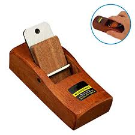

Tools suitable for hard woods

Safety Goggles
Dust Mask and Vapor Respirtors
Ear Plugs or Ear Muffs
Knee Pads
Feather Boards
To grind hardwood floors is an art itself. Scanmask in offers different wood tools so you
can reach the result that you want. The wood tools that Scanmaskin offers fits if you want
to grind up and smoothen old hard wood floors. The wood tools can be used after your
custom needs.
Our wood tool Scratch with claw can remove old floorings, while Scratch medium is more
adapted to floorgrinding and smoothen of hardwood floors. Our wood floors can be
used for different works like grinding on woodbridges, hardwood floors and so on.
When grinding with sandpaper we have attachable plates that makes it easy to change
thickness on the sandpapers. Scanmaskin offers an easy step by step guiding for you to
reach the ultimate results on your floors in our grindingguide.